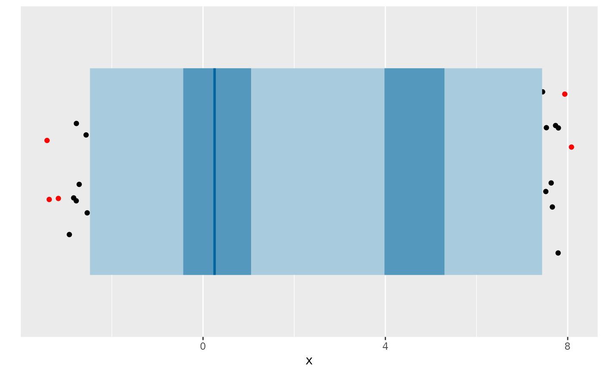
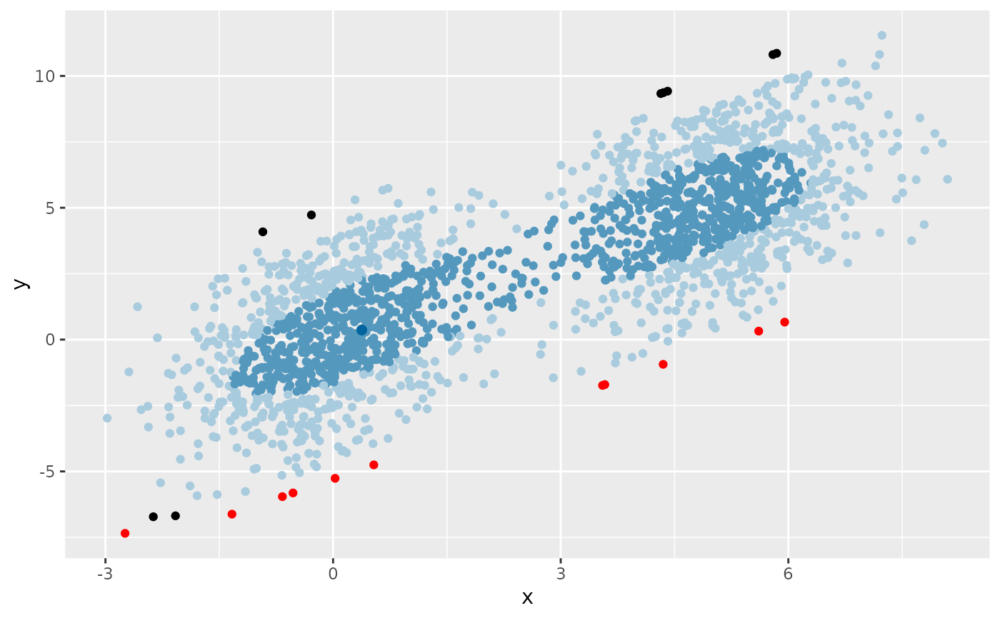
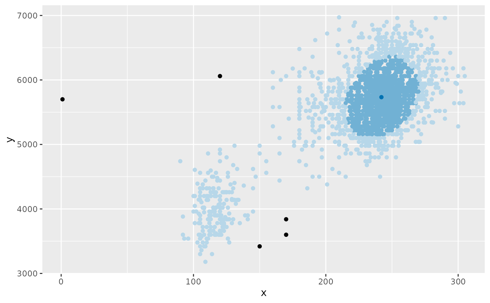
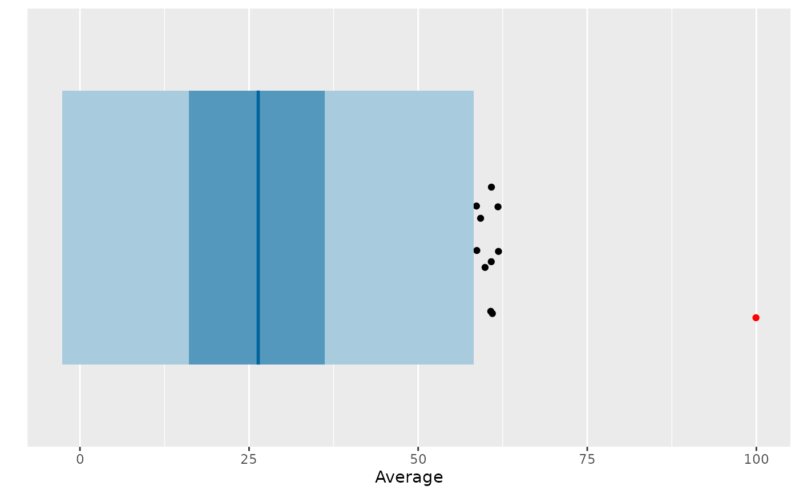

Produces a 1d or 2d box plot of HDR regions. The darker regions contain observations with higher probability, while the lighter regions contain points with lower probability. Points outside the largest HDR are shown as individual points. Points with lookout probabilities less than 0.05 are optionally shown in red.
Usage
gg_hdrboxplot(
data,
var1,
var2 = NULL,
prob = c(0.5, 0.99),
color = "#00659e",
scatterplot = FALSE,
show_lookout = TRUE,
...
)Arguments
- data
A data frame or matrix containing the data.
- var1
The name of the first variable to plot (a bare expression).
- var2
Optionally, the name of the second variable to plot (a bare expression).
- prob
A numeric vector specifying the coverage probabilities for the HDRs.
- color
The base color to use for the mode. Colors for the HDRs are generated by whitening this color.
- scatterplot
A logical argument indicating if a regular HDR plot is required (
FALSE), or if a scatterplot in the same colors is required (TRUE).- show_lookout
A logical argument indicating if the plot should highlight observations with "lookout" probabilities less than 0.05.
- ...
Other arguments passed to
kde.
Details
The original HDR boxplot proposed by Hyndman (1996), R can be produced with
all arguments set to their defaults other than lookout.
References
Hyndman, R J (1996) Computing and Graphing Highest Density Regions, The American Statistician, 50(2), 120–126. https://robjhyndman.com/publications/hdr/ Kandanaarachchi, S & Hyndman, R J (2022) "Leave-one-out kernel density estimates for outlier detection", J Computational & Graphical Statistics, 31(2), 586-599. https://robjhyndman.com/publications/lookout/
Examples
df <- data.frame(x = c(rnorm(1000), rnorm(1000, 5, 1)))
df$y <- df$x + rnorm(200, sd=2)
gg_hdrboxplot(df, x)

gg_hdrboxplot(df, x, y, scatterplot = TRUE)

oldfaithful |>
dplyr::filter(duration < 7000, waiting < 7000) |>
gg_hdrboxplot(duration, waiting, scatterplot = TRUE)

cricket_batting |>
dplyr::filter(Innings > 20) |>
gg_hdrboxplot(Average)
